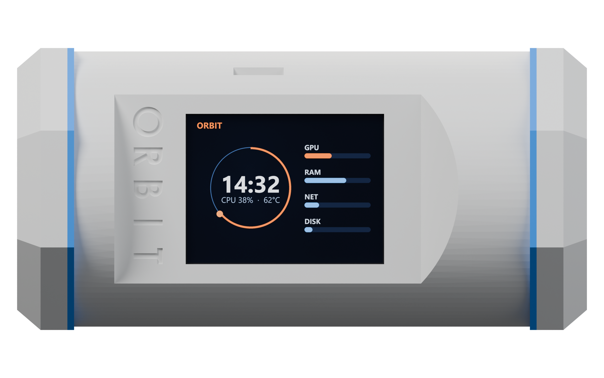

Loading USB controls…
Power the amplifier as well as the screen. Close other serial tools before starting; only one tool can use the USB port at a time. The test releases USB automatically when finished. Companion’s Wi-Fi connection can stay connected.
Connecting…
Orbit does not send conversation audio as commands automatically. Review the transcript and send it explicitly. Approval decisions use the exact native request below.
This server-side lock is shared across Orbit browsers, separate from the simulator lock. Leave the new code blank to turn it off.
Received means delivered to the desktop, not completed. Unconfirmed actions are never retried automatically. Requests requiring other native dialogs must be answered in the desktop app.

Enter your passcode to continue.
Connecting to coding conversation…
Enter your four-digit demo code.
Connect a USB data cable. These tools use your installed Orbit Companion and its existing CYD firmware package.
The new dashboard designs and five themes currently run in this browser only. The device version has not been built yet. They will not download to the device after this upload.
Many boards enter upload mode automatically. If the uploader cannot connect: hold BOOT, briefly press and release RESET (sometimes marked EN), then release BOOT and retry the upload. After a successful upload, press RESET once if the device does not restart.
Use a USB data cable and close other apps using this USB port. Uploading replaces the firmware already on the device.
Board missing from USB ports? Windows may need the CH340/CH341 driver. Download the official WCH Windows USB serial driver. Install it, then refresh ports.
No device has been changed.
Connect here, then hold the button on Orbit’s screen to speak. Release to hear the reply.
Checking shared API key…
AI mode sends your held recording to OpenAI and plays an AI-generated voice. This is a separate conversation from this chat. Keys stay in relay memory.
Ready to connect.